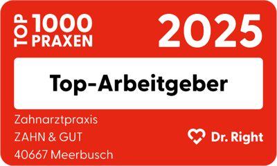
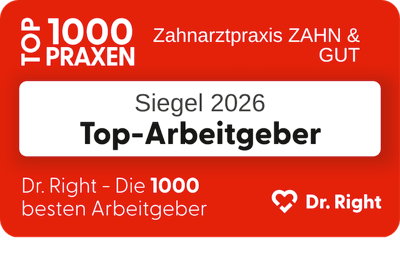
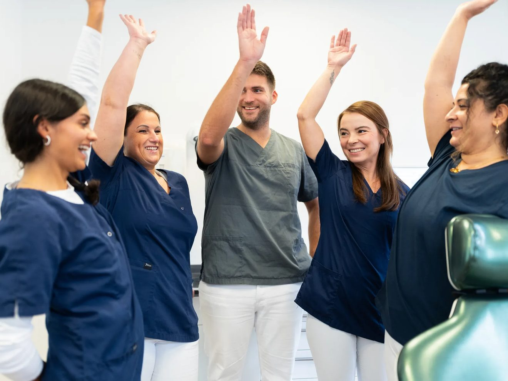
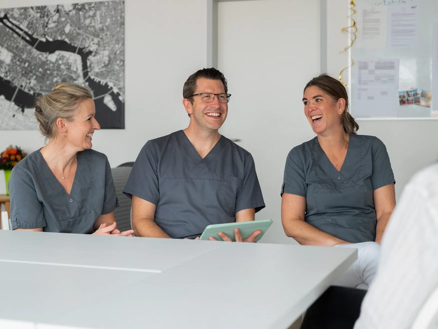

Teamgeist
Ein herzliches, engagiertes Team, das kollegial zusammenarbeitet und sich gegenseitig unterstützt.
Wir stellen ein · Meerbusch-Büderich
Wenn Du in einem engagierten Team mitwirken willst, das Spaß an guter Medizin hat: Willkommen bei ZAHN & GUT!


Top-Arbeitgeber 2025 & 2026ausgezeichnet von Dr. Right

4-Tage-Wochein Absprache möglich
Mi. & Fr. ab 13 Uhrfrüher Feierabend
Kein Notdienstkein Wochenenddienst
Über uns
Wir sind ZAHN & GUT, eine moderne Gemeinschaftspraxis in Meerbusch. Bei uns stehen Teamgeist, Qualität und Menschlichkeit im Mittelpunkt.
Wir bieten ein breites Behandlungsspektrum, von Zahnmedizin für Kinder bis Sofort-Implantologie, und schaffen eine Arbeitsatmosphäre, in der sich sowohl unsere Patienten als auch unser Team wohlfühlen.


Unser Team im Video
Unser Team
Wir sind ein herzliches, engagiertes Team aus Zahnärzt:innen und Fachkräften. Gemeinsam decken wir ein breites Spektrum von Kinderzahnmedizin bis Implantologie ab.
Dabei arbeiten wir kollegial, modern und patientenorientiert, immer mit dem Ziel, einander zu unterstützen und beste Ergebnisse für unsere Patienten zu erreichen.

Benefits
Weitere Benefits kannst Du den jeweiligen Stellen entnehmen.
Faire und attraktive Vergütung. Heute und in der Zukunft. Dazu Weihnachtsgeld und Jahresbonus.
In Absprache mit uns ist eine 4-Tage-Woche möglich. Mittwochs und freitags ist schon um 13 Uhr Feierabend.
Mit einem Arbeitgeberzuschuss.
Du möchtest Dich weiterbilden? Dann stehen wir Dir zur Seite.

Regelmäßige Teamevents und gemeinsame Aktivitäten.
Bei uns kannst Du Dich auf Fahrtkostenzuschüsse freuen.
Ein Jobticket oder Fahrtkostenzuschuss auf Wunsch.
Zu jeder Jahreszeit das passende Klima.
Gute Verkehrsanbindung und gute Parksituation.
Wir suchen Dich
Für unsere Praxis in Meerbusch suchen wir Verstärkung in Assistenz, Prophylaxe und Verwaltung sowie Auszubildende.
Nichts Passendes dabei? Du kannst Dich jederzeit initiativ bewerben, telefonisch unter 02132 99 88 426 oder per E-Mail an dr.k.becker@zahnundgut.de.
Zahnmedizin mit Herz. Bei uns stehen Teamgeist, Qualität und Menschlichkeit im Mittelpunkt.
Drei gute Gründe
Ein herzliches, engagiertes Team, das kollegial zusammenarbeitet und sich gegenseitig unterstützt.

Ein breites Behandlungsspektrum von Kinderzahnmedizin bis Sofort-Implantologie, modern und patientenorientiert.

Eine Arbeitsatmosphäre, in der sich unsere Patienten und unser Team gleichermaßen wohlfühlen.
Bewerbung
Unterlagen parat? Falls nicht, kannst Du auch ohne Unterlagen Kontakt aufnehmen.
Nachdem wir Deine Bewerbung erhalten haben, starten wir den Unterlagencheck und melden uns in kurzer Zeit bei Dir.
Im zweiten Schritt verabreden wir uns für ein kurzes Telefonat, um weitere Infos zu besprechen.
Im Nachgang terminieren wir ein persönliches Kennenlernen in unserer Praxis und schauen, ob wir zusammenpassen.
In unserer Praxis hast Du die Möglichkeit, Dir einen besseren Eindruck von unserem Team und unserer Arbeit zu verschaffen.
Wie bist Du auf uns aufmerksam geworden? Was macht Dich aus und warum bist Du die geeignete Besetzung für die Stelle?
Ob ein tabellarischer Lebenslauf oder in Textform bleibt Dir überlassen. Wichtig ist uns, was die Aufgabenbereiche Deiner letzten Position waren.
Es reicht vollkommen aus, wenn Du uns Deine letzten relevanten Zeugnisse zusendest. Wahlweise kannst Du auch noch Zertifikate mit anhängen.

Bei allen Fragen rund um die Bewerbung
Dr. Katrin BeckerZahnärztin
F.A.Q.
Deine Frage ist nicht dabei? Dann melde Dich einfach bei uns. Wir helfen Dir gerne weiter und freuen uns anschließend auf Deine Bewerbung.
02132 99 88 426Allgemeine Fragen
Du kannst Dich auch jederzeit initiativ bei uns bewerben. Wir lassen uns gerne von Deinen Fähigkeiten überzeugen.
Unsere Webseite ist immer auf dem neusten Stand, daher sind alle ausgeschriebenen Stellen aktuell.
Die Daten werden bei uns nur hausintern verarbeitet und nicht an Dritte weitergegeben. Gerne können wir diese auf Wunsch löschen oder für spätere Verfahren berücksichtigen.
In der jeweiligen Stellenanzeige findest Du ein Bewerbungsformular. Alternativ auch via E-Mail oder über den Postweg.
Grundsätzlich legen wir keinen großen Wert auf Noten, viel wichtiger ist uns die Person hinter der Bewerbung.
Fragen zur Ausbildung
Der Startzeitpunkt der Ausbildung ist in der Stellenausschreibung festgehalten. Sollte er sich ändern, passen wir ihn entsprechend an.
Wir schätzen engagierte und motivierte Teamkollegen sehr, daher ist eine Übernahme möglich.
Unterlagen parat? Falls nicht, kannst Du auch ohne Unterlagen Kontakt aufnehmen.